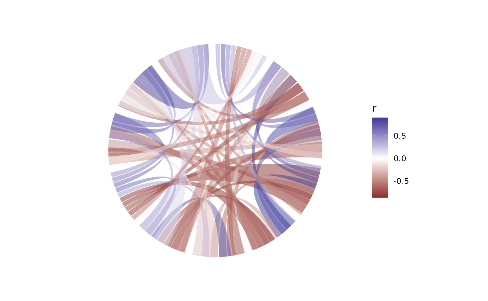

A chord leaves each of its two endpoint arcs at the slot the layout
reserved for it, so links read as a banded ring rather than a star burst
from node centres. Two shapes are available: type = "ribbon" fills the
area between the two curves of a link, type = "line" draws a single
curve from one slot to the other.
Usage
geom_chord(
mapping = NULL,
data = NULL,
stat = "identity",
position = "identity",
...,
from = NULL,
to = NULL,
type = c("ribbon", "line"),
curvature = "auto",
ncp = 40,
alpha = NULL,
linewidth = NULL,
arrow = NULL,
na.rm = FALSE,
show.legend = NA,
inherit.aes = TRUE
)Arguments
- mapping, data, stat, position, show.legend, inherit.aes, na.rm, ...
Standard
ggplot2::layer()arguments.- from, to
Unquoted column names of the link endpoints. Required when
datais supplied; otherwise the layout's link table is used as is.- type
"ribbon"(filled area) or"line"(single curve).- curvature
"auto"derives the bulge from how far apart the two slots are – opposite slots reach the centre. A number overrides it:1always bulges to the centre.- ncp
Number of points sampled along each curve.
- alpha, linewidth
Line width / ribbon opacity defaults.
- arrow
Optional arrow specification for
type = "line".
Details
The default data is the layout's link table, in which the coordinates are
already computed. To style a subset of the links, pass data plus the
two endpoint columns – either as arguments (from = , to = ) or through
the mapping (aes(from = , to = )).
Geometry
For a slot pair [a0, a1] and [b0, b1], let d be the shortest signed
angular distance between the two facing slot edges. The control point
radius is k = 1 - 4|d| / (3pi), which is 1 for adjacent slots (the
curve stays on the ring) and -1/3 for opposite slots (the curve passes
through the centre). The control points share the endpoints' angles, so
every chord leaves the ring radially.
Examples
m <- cor(mtcars)
ggcircos(m, order = "hclust") +
geom_chord(aes(fill = r)) +
ggplot2::scale_fill_gradient2(midpoint = 0)
